Destaques · 26 de agosto de 2026
O Sindisindi-RS completa 37 anos em 2026, representando os trabalhadores em sindicatos, federações, confederações, centrais sindicais e todos os órgãos de classe, no Estado do Rio Grande do Sul.…
Ler notícia
Destaques · 18 de agosto de 2026
O Sindisindi/RS disponibiliza para a categoria a nova edição do informativo digital e-Sindicatário. Além da versão impressa a publicação é disponibilizada em formato virtual, leia abaixo. Pautas da…
Ler notícia
Destaques · 17 de julho de 2026
O Sindisindi/RS acaba de firmar uma parceria exclusiva com o professor Marcos Lobão para oferecer capacitação em língua inglesa focada no ambiente corporativo. Para marcar o início desta jornada,…
Ler notícia
Destaques · 9 de julho de 2026
📢 O Sindisindi/RS quer ouvir você! Estamos realizando um levantamento sobre a situação da saúde dos trabalhadores nos sindicatos e entidades de classe do Rio Grande do Sul. Queremos compreender…
Ler notícia
Notícias · 26 de junho de 2026
O Sindisindi/RS comunica a toda a categoria de sindicatários e sindicatárias que, em virtude do jogo da Seleção Brasileira pelas oitavas de final da Copa do Mundo — marcado para a próxima…
Ler notícia

Destaques · 22 de junho de 2026
A Câmara dos Deputados deu um novo passo na análise de duas importantes convenções da Organização Internacional do Trabalho (OIT) voltadas à promoção da igualdade e à proteção dos direitos de…
Ler notícia
Notícias · 22 de junho de 2026
As empresas são obrigadas a divulgar aos funcionários informações sobre campanhas oficiais de vacinação contra o papilomavírus humano (HPV) e de prevenção dos cânceres de mama, de colo do útero e de…
Ler notícia
Notícias · 8 de junho de 2026
É com profundo pesar e imensa tristeza que o Sindisindi/RS comunica o falecimento de nossa Diretora de Assuntos do Interior, Vera Lúcia Goulart da Rosa , ocorrido na manhã desta segunda-feira (8),…
Ler notícia
Notícias · 11 de maio de 2026
A palestra “NR 01 e a Saúde dos sindicatários no ambiente de trabalho”, apresentada pela médica do trabalho Christine Wagner Poloni, abordou as mudanças na Norma Reguladora Nº 1 e suas implicações…
Ler notícia
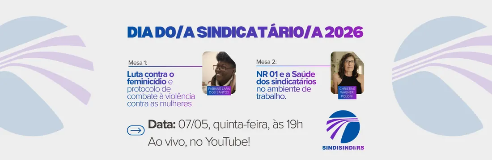
Notícias · 5 de maio de 2026
Na semana do dia do sindicatário, o SindiSindi-RS aborda dois temas de suma importância para a categoria sindicatária em um evento virtual. A transmissão AO VIVO ocorrerá no YouTube do sindicato,…
Ler notícia

Notícias · 30 de abril de 2026
Neste sábado, 9 de maio de 2026, comemora-se o Dia Estadual do Sindicatário. A data carrega um simbolismo especial este ano: celebram-se exatamente duas décadas desde que, em 2006, os trabalhadores…
Ler notícia
Notícias · 29 de abril de 2026
Devido à previsão de chuva no 1º de Maio, o Festival dos Trabalhadores e das Trabalhadoras, em Porto Alegre, será realizado na Casa do Gaúcho, no Parque Harmonia, das 14h às 22h, e não na Praça da…
Ler notícia

Destaques · 28 de abril de 2026
Em um movimento de reafirmação do compromisso com a categoria e com a saúde ocupacional, o Sindisindi-RS participou ativamente das atividades dos 20 anos do Fórum Sindical de Saúde do Trabalhador…
Ler notícia
Destaques · 14 de abril de 2026
Em um movimento que fortalece a luta nacional pelo fim da escala 6×1, o SINDIPOLO/RS e o SINDISINDI/RS anunciaram a implementação da jornada de 36 horas semanais para seus funcionários, sem qualquer…
Ler notícia
Notícias · 7 de abril de 2026
O presidente Luiz Inácio Lula da Silva sancionou o projeto de lei que amplia a licença-paternidade no Brasil . De acordo com o texto, a extensão ocorrerá de forma gradual, passando dos atuais cinco…
Ler notícia

Notícias · 7 de abril de 2026
Trabalhadores e trabalhadoras de todo o país se reúnem no próximo dia 15 de abril, em Brasília, para a M archa da Classe Trabalhadora 2026, com reivindicações históricas do movimento sindical e…
Ler notícia

Notícias · 7 de abril de 2026
O estado do Rio Grande do Sul será palco de uma mobilização inédita no 1º de Maio deste ano: o Festival dos Trabalhadores e das Trabalhadoras. O evento, que tem entrada gratuita, ocorrerá…
Ler notícia
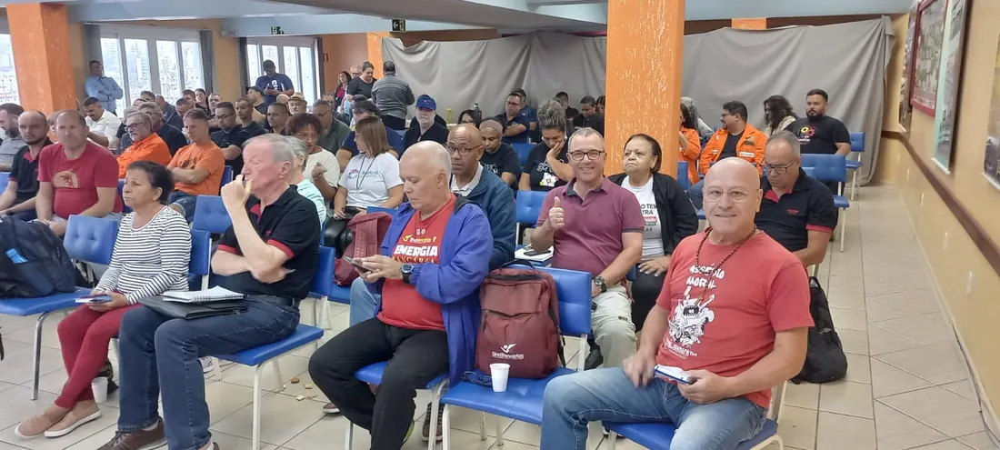
Notícias · 7 de abril de 2026
O presidente do Sindisindi/RS , Baptista Rocha , e os diretores Rachel Cefrin e Júlio Angeli participaram, nesta terça-feira (07), do seminário “Riscos Psicossociais Relacionados ao Trabalho”. O…
Ler notícia
Destaques · 7 de abril de 2026
A nova lei 15.377/2026, sancionada pelo presidente Luiz Inácio Lula da Silva e publicada nesta segunda-feira (6) no Diário Oficial da União, altera a Consolidação das Leis Trabalhistas (CLT) e…
Ler notícia

Notícias · 26 de março de 2026
A capital gaúcha receberá mais de 3,5 mil ativistas de pelo menos 50 países, de cinco continentes, para a 1 ª Conferência Internacional Antifascista pela Soberania dos Povos . O objetivo é construir,…
Ler notícia
Notícias · 19 de dezembro de 2025
O Sindisindi/RS deseja boas festas a todos os trabalhadores e trabalhadoras dos sindicatos gaúchos. Que neste fim de ano possamos celebrar nossas conquistas coletivas , o carinho e a união junto às…
Ler notícia
Destaques · 11 de dezembro de 2025
O Sindisindi/RS disponibiliza para a categoria a nova edição do informativo digital e-Sindicatário. Com previsão de periodicidade trimestral, a publicação será disponibilizada em formato virtual,…
Ler notícia
Notícias · 31 de outubro de 2025
O Sindisindi RS manifesta seu mais profundo repúdio e indignação diante da megaoperação policial realizada nesta semana, 28 de outubro, nos complexos da Penha e do Alemão, no Rio de Janeiro, que…
Ler notícia
Destaques · 15 de outubro de 2025
Graças a uma nova parceria entre o Sindisindi RS e o SINTTEL-RS, os nossos filiados agora podem desfrutar da Colônia de Férias de Rondinha, localizada a apenas 50 metros do mar, no Litoral Norte do…
Ler notícia
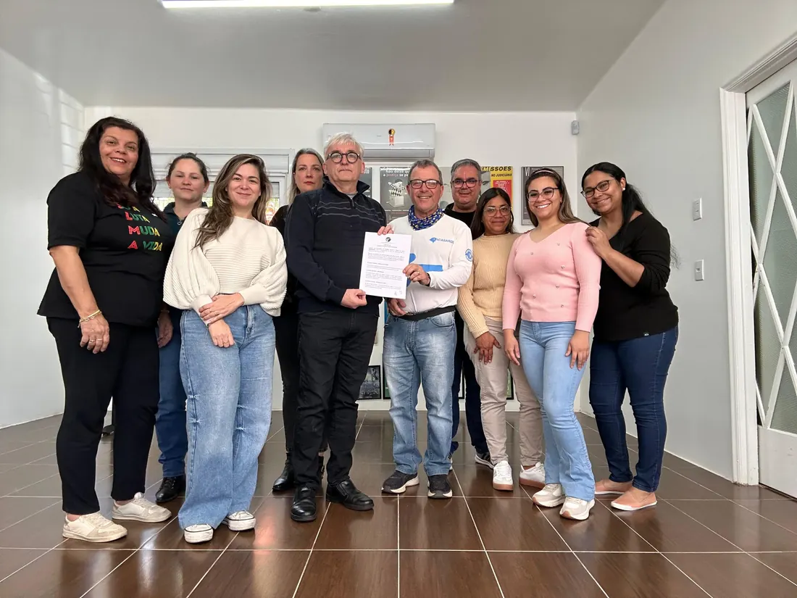
Notícias · 26 de setembro de 2025
O Sindisindi-RS, Sindicato dos Trabalhadores em Entidades Sindicais e Órgãos de classe do Rio Grande do Sul, celebra a assinatura do acordo coletivo dos sindicatários vinculados ao SindjusRS. O…
Ler notícia
Notícias · 19 de setembro de 2025
Neste domingo (21), a CUT e as entidades que compõem as Frentes Brasil Popular e Povo Sem Medo, Fórum das Centrais Sindicais e Grito dos Excluído e das Excluídas estarão nas ruas de todo o país…
Ler notícia
Notícias · 19 de setembro de 2025
O Sindisindi/RS manifesta seu profundo pesar e luto pelo falecimento de Simone Oliveira da Silva , vítima de feminicídio. Simone, trabalhadora terceirizada do setor de limpeza do SindBancários Porto…
Ler notícia
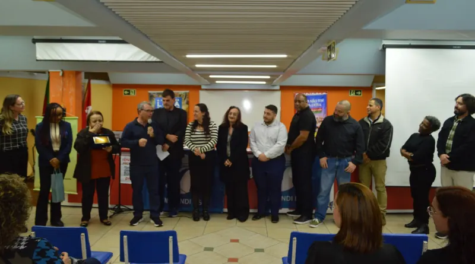
Notícias · 26 de agosto de 2025
A noite de 22 de agosto marcou um novo capítulo na história do Sindicato dos Empregados em Entidades Sindicais e Órgãos de Classe no Estado do Rio Grande do Sul (Sindisindi-RS). Com uma cerimônia no…
Ler notícia
Destaques · 26 de agosto de 2025
Hoje, 26 de agosto, o Sindisindi-RS completa 36 anos de história, resistência e conquistas em defesa dos trabalhadores que atuam em sindicatos, cooperativas e demais instituições representativas.…
Ler notícia

Notícias · 20 de agosto de 2025
A soberania de uma nação, no século XXI, é medida não apenas por sua força militar ou por sua riqueza em recursos naturais, mas, fundamentalmente, pela sua capacidade de controlar e desenvolver sua…
Ler notícia

Notícias · 15 de agosto de 2025
🎉 Fortalecendo a Representatividade Sindical: Novos Delegados Eleitos! ✊ Nesta semana, cinco sindicatos da base do Sindisindi/RS deram um passo importante na construção coletiva da luta sindical.…
Ler notícia
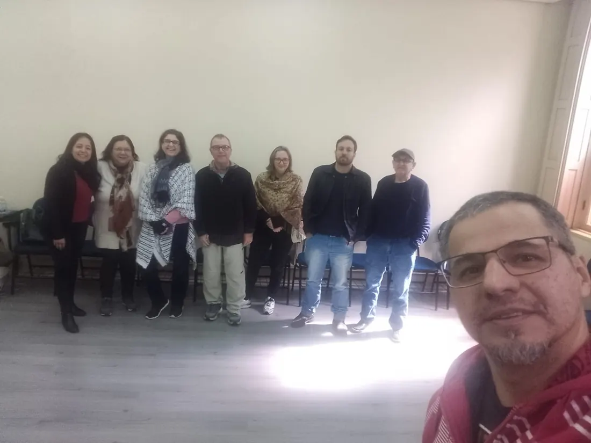
Notícias · 15 de agosto de 2025
Em Assembleia Geral realizada nesta sexta-feira, 15 de agosto, os sindicatários do Sinttel RS rejeitaram a proposta apresentada pela direção do sindicato e encaminharam uma contraproposta referente…
Ler notícia
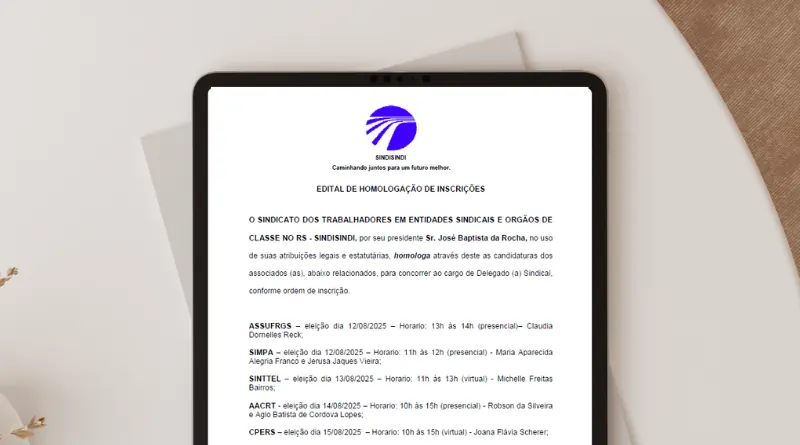
Notícias · 8 de agosto de 2025
A diretoria do Sindisindi/RS torna público o Edital de Homologação das Candidaturas para o Cargo de Delegado Sindical 2025. Confira no documento abaixo as candidaturas relacionadas: Edital…
Ler notícia
Notícias · 31 de julho de 2025
O Sindicato dos Empregados em Entidades Sindicais e Órgãos de Classe no Estado do Rio Grande do Sul (Sindisindi-RS) realizará, no dia 22 de agosto, às 19h30, a posse da nova diretoria eleita para o…
Ler notícia

Notícias · 25 de julho de 2025
Por Leandro Malósi Dóro Os recentes ataques dos Estados Unidos ao Brasil, manifestados através de investigações e sanções comerciais, escancararam a vulnerabilidade de nossa infraestrutura digital e…
Ler notícia

Notícias · 24 de julho de 2025
A chapa “Resistência e Luta” foi aclamada como a nova diretoria do Sindicato dos Empregados em Entidades Sindicais e Órgãos de Classe no Estado do Rio Grande do Sul (Sindisindi-RS) para o mandato que…
Ler notícia
Notícias · 24 de julho de 2025
A pejotização, prática crescente no mercado de trabalho brasileiro, tem se infiltrado em diversos setores, inclusive aqueles que, por sua natureza, deveriam ser os primeiros a defender os direitos…
Ler notícia
Notícias · 11 de julho de 2025
As eleições do Sindisindi/RS ocorrem no dia 24 de julho, das 09h às 17h, em formato virtual. Os filiados irão eleger a nova Diretoria , o Conselho Fiscal e os Delegados Representantes . Confira…
Ler notícia
Notícias · 9 de julho de 2025
A recente medida do ex-presidente norte-americano Donald Trump de impor tarifas de 50% sobre produtos brasileiros é mais do que uma ação comercial — é uma tentativa velada de golpe geopolítico. Por…
Ler notícia
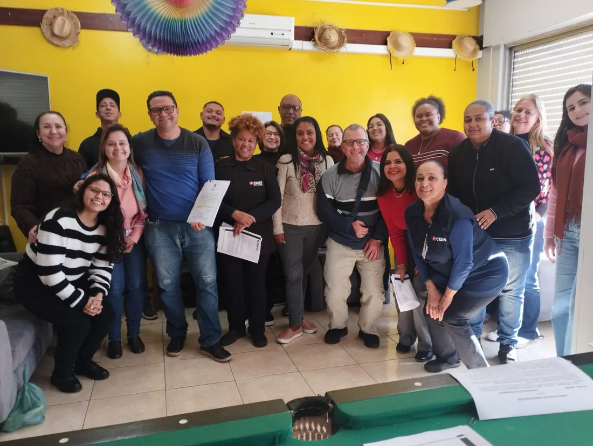
Notícias · 8 de julho de 2025
Os sindicatários do Centro de Professores do Estado do Rio Grande do Sul (Cpers) aprovaram, em assembleia, a renovação do Acordo Coletivo de Trabalho (ACT) com reajuste de 5,32% nos salários, além de…
Ler notícia
Notícias · 2 de julho de 2025
Entidades que compõem as Frentes Brasil Popular e Povo Sem Medo, entre elas a CUT, deram início nesta terça-feira, 1º de julho, ao processo de coleta de votos do Plebiscito Popular 2025, uma consulta…
Ler notícia
Notícias · 2 de julho de 2025
A Justiça do Trabalho de Mato Grosso condenou a multinacional BRF a pagar apenas R$ 150 mil por danos morais a uma funcionária que perdeu as filhas gêmeas após ser impedida de sair do trabalho…
Ler notícia
Notícias · 27 de junho de 2025
A Comissão Eleitoral do Sindicato dos Empregados em Entidades Sindicais e Órgãos de Classe no Estado do Rio Grande do Sul (Sindisindi-RS) confirmou o registro da chapa “Resistência e Luta” , única…
Ler notícia
Notícias · 26 de junho de 2025
Com as eleições sindicais do Sindisindi/RS se aproximando em 24 de julho de 2025, os associados precisam ficar atentos a uma mudança importante: a votação será totalmente virtual , através do sistema…
Ler notícia
Notícias · 25 de junho de 2025
A chapa “Resistência e Luta” foi oficialmente registrada nesta quarta-feira, 25 de junho de 2025, como a única a concorrer às eleições do Sindicato dos Empregados em Entidades Sindicais e Órgãos de…
Ler notícia
Notícias · 25 de junho de 2025
O Sindicato dos Empregados em Entidades Sindicais e Órgãos de Classe no Estado do Rio Grande do Sul (Sindisindi/RS) tem data marcada para suas eleições sindicais: 24 de julho de 2025 . A votação…
Ler notícia
Notícias · 18 de junho de 2025
O Sindisindi/RS repudia com veemência mais um caso de violência brutal cometido contra mulheres no Brasil. O assassinato da vereadora Elisane Rodrigues dos Santos , única mulher na Câmara Municipal…
Ler notícia

Notícias · 13 de junho de 2025
Com a chegada do inverno no Rio Grande do Sul, é comum ver janelas abertas e o ar-condicionado desligado em muitos ambientes de trabalho. No entanto, essa prática, muitas vezes feita com boa intenção…
Ler notícia
Notícias · 12 de junho de 2025
A Câmara dos Deputados aprovou, nessa terça-feira, 10/6, o projeto de lei (PL) 1663/2023, que trata de atualizações na legislação trabalhista. A principal mudança, porém, não está no texto principal…
Ler notícia
Destaques · 10 de junho de 2025
O Sindicato dos Empregados em Entidades Sindicais e Órgãos de Classe no Estado do Rio Grande do Sul (SINDISINDI/RS) tem o prazer de anunciar a divulgação oficial do seu Estatuto Social. O documento,…
Ler notícia
Notícias · 3 de junho de 2025
O Sindicato dos Empregados em Entidades Sindicais e Órgãos de Classe no Estado do Rio Grande do Sul (Sindisindi/RS) realizará sua eleição sindical no dia 24 de julho de 2025, das 9h às 17h, em…
Ler notícia
Notícias · 30 de maio de 2025
Em muitos países marcados pela desigualdade extrema e pela pobreza persistente, a história oficial costuma exaltar governantes, juristas e empresários como “pais da pátria” ou “grandes…
Ler notícia
Notícias · 30 de maio de 2025
Os sindicatários da ASSUFRGS, Sindicato dos Técnico-Administrativos em Educação da UFRGS, UFCSPA e IFRS, conquistaram mais uma vitória da mobilização da categoria. Após envio de ofício à Coordenação…
Ler notícia
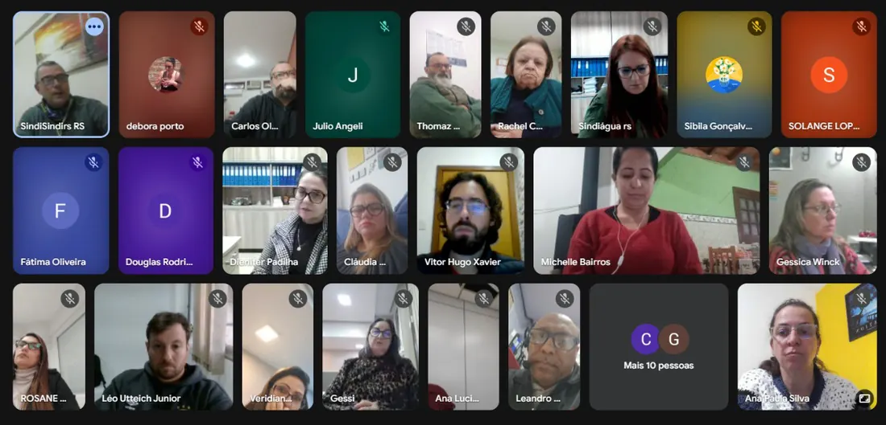
Notícias · 30 de maio de 2025
Na tarde desta quinta-feira, 29 de maio de 2025, o Sindicato dos Empregados em Entidades Sindicais e Órgãos de Classe no Estado do Rio Grande do Sul (Sindisindi-RS) realizou sua Assembleia Geral…
Ler notícia
Notícias · 26 de maio de 2025
Nesta segunda-feira (26/05) entra em vigor a nova versão da Norma Regulamentadora (NR-1), que trata do Programa de Gerenciamento de Riscos (PGR) aos trabalhadores e trabalhadoras nas empresas. A…
Ler notícia
Notícias · 19 de maio de 2025
O Sindicato dos Empregados em Entidades Sindicais e Órgãos de Classe no Estado do Rio Grande do Sul (Sindisindi/RS) publicou, na edição do jornal Zero Hora de 19 de maio de 2025, o edital de…
Ler notícia
Notícias · 16 de maio de 2025
O Sindisindi/RS finalizou com êxito as negociações do Acordo Coletivo de Trabalho com a direção da CUT/RS. Após três rodadas de negociação, os trabalhadores aprovaram a proposta apresentada, que…
Ler notícia
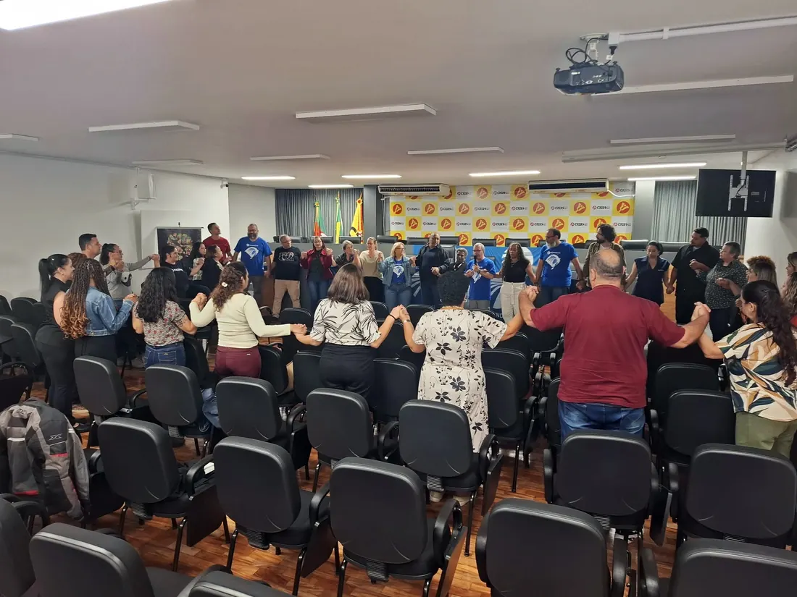
Notícias · 14 de maio de 2025
No encerramento do seminário “Dia do Sindicatário – Relações de Trabalho: Assédio, Racismo e Vida Laboral”, realizado pelo Sindisindi/RS no auditório do CPERS, o presidente Baptista Rocha propôs um…
Ler notícia
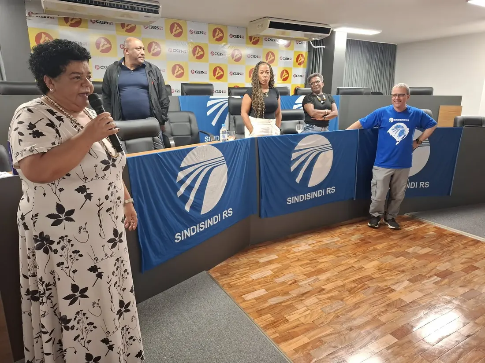
Notícias · 14 de maio de 2025
Durante o seminário “Dia do Sindicatário – Relações de Trabalho: Assédio, Racismo e Vida Laboral”, promovido pelo Sindisindi/RS no auditório do CPERS, a militante e sindicatária Elis Regina Duarte…
Ler notícia
Notícias · 14 de maio de 2025
O Sindisindi/RS manifesta profundo pesar pelo falecimento de José “Pepe” Mujica, ex-presidente do Uruguai, ocorrido nesta terça-feira, 13 de maio de 2025, aos 89 anos. Figura emblemática da esquerda…
Ler notícia
Notícias · 14 de maio de 2025
Mais de 2.800 trabalhadores brasileiros morreram em acidentes de trabalho só em 2023. A cada três horas, uma nova morte. A cada 50 segundos, um acidente é registrado. Esses dados alarmantes abriram a…
Ler notícia
Notícias · 14 de maio de 2025
O auditório do Cpers/Sindicato foi palco, na última segunda-feira, 13 de maio, de um importante debate sobre racismo, assédio e vida laboral durante o seminário “Dia do Sindicatário – Relações de…
Ler notícia
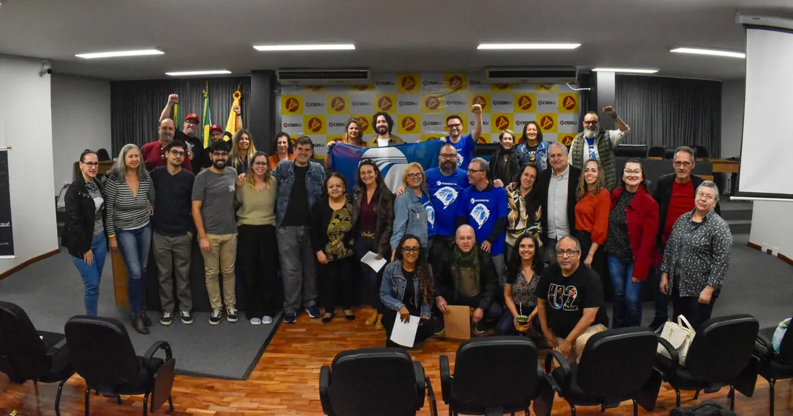
Notícias · 14 de maio de 2025
O seminário “Dia do Sindicatário – Relações de Trabalho – Assédio, Racismo e Vida Laboral”, promovido pelo Sindisindi/RS, movimentou o auditório do Cpers nesta terça-feira, 13 de maio, com debates…
Ler notícia
Notícias · 8 de maio de 2025
Nove de maio é o Dia Estadual do Sindicatário. A data foi escolhida porque nesse dia, em 2006, os trabalhadores sindicatários conquistaram o direito à sindicalização na CLT. Em 2011, o Rio Grande do…
Ler notícia
Notícias · 26 de abril de 2025
O Diretor dos Assuntos do Patrimônio do Sindisindi/RS, Leandro Correa Rodrigues, foi homenageado no baile de 80 anos do Cpers/Sindicato, realizado no Grêmio Náutico União. A cerimônia reuniu cerca de…
Ler notícia
Notícias · 23 de abril de 2025
No próximo dia 13 de maio, das 9h às 17h, o auditório do Cpers (Av. Alberto Bins, 480) será palco do seminário “Dia do Sindicatário – Relações de Trabalho – Assédio, Racismo e Vida Laboral”,…
Ler notícia
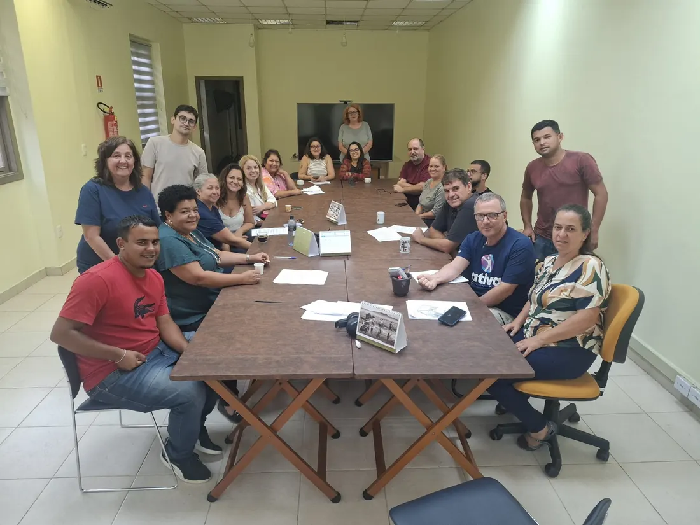
Notícias · 2 de abril de 2025
Os sindicatários do Sindicato dos Trabalhadores do Judiciário Federal e MPU do RS (Sintrajufe/RS) deram o pontapé inicial nas negociações do acordo coletivo de 2025. A primeira reunião, realizada…
Ler notícia
Notícias · 6 de março de 2025
No próximo sábado, dia 8 de março, Porto Alegre terá um ato unificado em celebração ao Dia Internacional da Mulher. A concentração acontece a partir das 9h no Largo Glênio Peres e contará com forte…
Ler notícia
Notícias · 27 de fevereiro de 2025
Com o objetivo de manter o poder de compra dos salários dos trabalhadores, o Sindisindi/RS, através do presidente Baptista Rocha, firmou histórico acordo coletivo de trabalho com o Sindicato dos…
Ler notícia
Notícias · 11 de novembro de 2024
No último mês de 2023, Porto Alegre liderou o ranking de custos da cesta básica (R$ 766,53), seguida por São Paulo (R$ 761,01), Florianópolis (R$ 758,50) e Rio de Janeiro (R$ 738,61). Já as cidades…
Ler notícia
Notícias · 31 de outubro de 2024
O Plenário da Câmara dos Deputados aprovou nesta quarta-feira (29), por 286 votos contra 121, proposta que torna feriado nacional o Dia da Consciência Negra, celebrado em 20 de novembro. O Projeto de…
Ler notícia

Notícias · 31 de outubro de 2024
A maior injustiça cometida pelo governo de Jair Bolsonaro (PL) contra os beneficiários e pensionistas do Instituto Nacional do Seguro Social (INSS) foi a reforma da Previdência, em 2019, que aumentou…
Ler notícia
Notícias · 30 de outubro de 2024
O Sindisindi-RS completa 35 anos em 2024, representa os trabalhadores em sindicatos, federações, confederações, centrais sindicais e todos os órgãos de classe, no Estado do Rio Grande do Sul. Atuando…
Ler notícia
Nenhuma notícia encontrada. Tente outra palavra ou limpe os filtros.